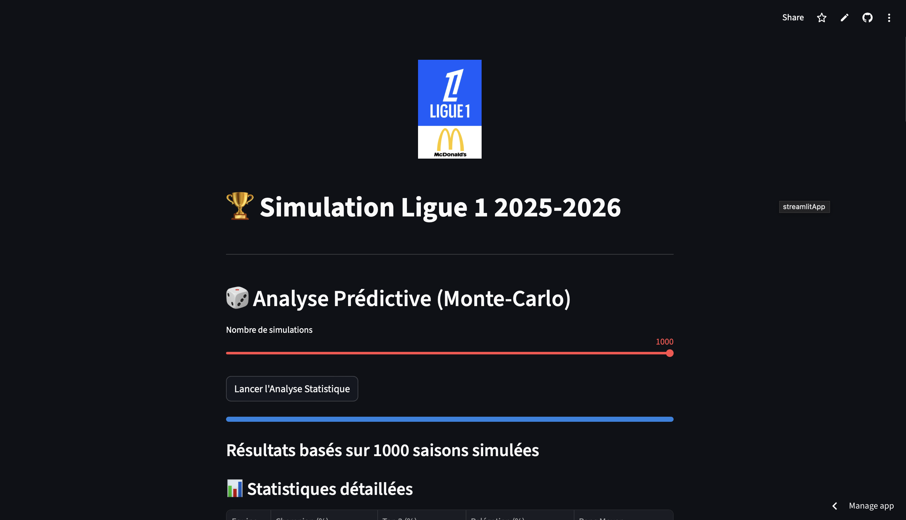

Data Science & Analytics
Ligue 1 Simulator & Predictive Analysis
Developed an algorithm based on the Monte Carlo method to simulate 1,000 iterations of season finales. Automated data collection and cleaning using Pandas.
View Code → Live App →